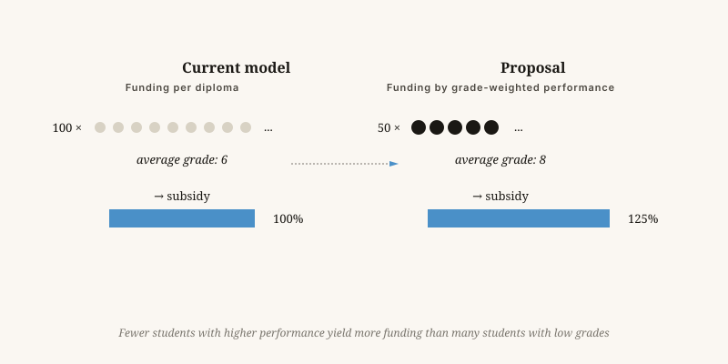

From learning factory to workshop
A school that delivers a hundred sixes currently receives more money than a school that delivers fifty eights. That is the problem.
By Jacobus van Merksteijn · 9 min read · 23 May 2026

The workshop — where talent and motivation meet
We fund numbers, not quality
We fund schools on the number of certificates they award. So they award certificates — not necessarily educated people. That is no failing of the teachers. It is a built-in incentive that naturally translates into lower standards, easier examinations and ever more "learning pathways" for pupils who are not really suited to the level.
The problem in one sentence
Hold schools to account for numbers of passes and you get numbers of passes. Hold them to account for educated people and you get educated people.

Four concrete reforms
Why this fits the 7D way of thinking
Scale law in the classroom
Education scales poorly. What works in a class of fifteen fails in a class of thirty. That is not an administrative problem — it is a law of nature. A teacher can give a limited number of people individual attention at any one time.
Value that only becomes visible later
A good teacher changes a life, and that change only expresses itself in prosperity or wellbeing decades later. Policy that steers only on short-term money does not see that W-value.
Freedom as a driver
Education requires multiplicity: different schools, different methods, no monoculture. One ministerial curriculum for 7,500 primary schools is a levelling machine.
Is this elitist?
People will say: you are excluding children. My answer is that an honest mirror is the opposite of exclusion.
Whoever today earns a qualification with little behind it is still excluded — later — in the labour market, on a course they cannot manage, in a life that does not suit them. That is crueller than saying in time: this is not your path, look over here.
Education is not a welfare system. It is an instrument for letting people become themselves. That succeeds only with honest measures.
From learning factory to learning workshop
A school that produces a hundred grade sixes receives more funding than one that produces fifty grade eights. That is the problem.
We fund schools by the number of diplomas they issue. So they issue diplomas — not necessarily educated people. This is not the fault of teachers. It is a built-in incentive that naturally translates into lower standards, easier exams, and ever more "learning pathways" for students who are not actually suited to the level.
Four concrete reforms: fund schools on the average final grade rather than the pass rate; allow stricter admission so that motivation and talent are matched; redirect government spending away from childcare in the first seven to ten years of life towards home-based parental support; and acknowledge that an outstanding plumber creates more social value than a mediocre policy scientist.
Is this elitist? An honest mirror is the opposite of exclusion. The student who leaves with a degree that means little will be excluded later — in the labour market, in further study beyond their reach. That is crueller than saying early on: this is not your path, look here instead.
The scale law in the classroom
Education scales badly. What works in a class of fifteen fails in a class of thirty — that is not an administrative problem but a law of nature. Freedom for schools to be different is not a luxury; it is the only guarantee that something new can grow. A single ministerial curriculum imposed on thousands of primary schools is a levelling machine.